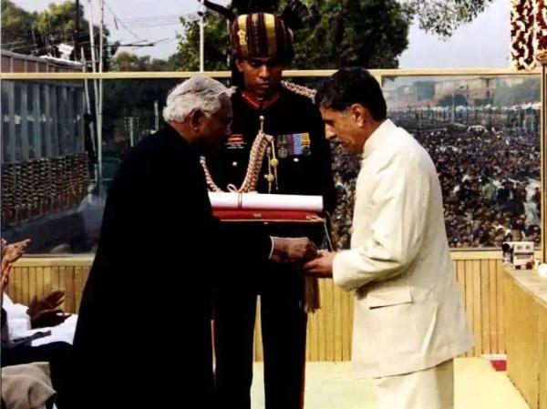

Capture of Point 5140
- The task of capturing Point 5140, a strategically important mountain peak in the Dras sector, was assigned to 13 JAK Rif under the command of Lieutenant Colonel Yogesh Kumar Joshi on 17 June 1999.[
- On 18 June, the battalion carried out a detailed reconnaissance of Point 5140 which revealed the enemy had put in place seven sangars on the feature; two on the top, four towards the east and one towards the north.
- Joshi decided to attack Point 5140 with Bravo Company, under the command of Lieutenant Sanjeev Singh Jamwal, and Delta Company, under the command of Lieutenant Vikram Batra, from two sides; East and South.
- At the Hump Complex, the two officers, Jamwal and Batra, received their briefing about the mission from Joshi.
- During the briefing, Jamwal chose the words "Oh! Yeah, yeah, yeah!" to be the success signal for his company whilst Batra chose the words "Yeh Dil Mange More!"
- At 0435 hours, Batra radioed his command post, saying the words "Yeh dil mange more!"
- After the capture of Point 5140, Batra was promoted to the rank of captain
- the then Chief of Army Staff, called to congratulate him. All across the nation, his triumph was being played out on television screens.
Capture of Point 4875 start
- Upon reaching Mushkoh Valley, the 13 JAK Rifles was placed under the command of 79 Mountain Brigade.[59] The next assignment for Batra's battalion was to capture the Point 4875, a strategically important peak located in the Mushkoh Valley.
- On 1 July 1999, Major S Vijay Bhaskar, 'A' Company commander and Lt. Col. Joshi, commanding officer of the 13 JAK Rifles, conducted their preliminary reconnaissance, after climbing to a vantage point, and formulated an attack plan.
- The battalion was deployed to firebase, located in a defiladed area, approximately 1500 metres from the Point 4875. Over the two days, on 2 and 3 July, weapons carriers from the 13 JAK Rifles and 28 Rashtriya Rifles dumped ammunition and heavy weapons
- At 1800 hours that same day, artillery bombardment of the enemy positions on Point 4875 commenced,[65] and continued throughout the whole night.[66] 155 mm Bofors Howitzers, 105 mm Field Guns, and multi barrel rocket launchers were used in the bombardment of Point 4875.[
- At 0430 hours, the two companies deployed their automatic weapons and began to fire at the well-fortified enemy positions at the top of the feature.
- At 2200 hours on 5 July, from a Pakistani position north of Point 4875, the enemy brought heavy and accurate fire on the two companies. In the early hours of the following morning at 0445 hours, 'C' Company reported they were in a heavy firefight and were running out of ammunition.
- Batra exposed himself to enemy fire to drag the injured soldier to safety, and in the process was shot in the chest by an enemy sniper from very close range
Param Vir Chakra

- Vikram Batra was awarded the Param Vir Chakra, India's highest military honour on 15 August 1999
- the 52nd anniversary of India's independence.
- His father G.L. Batra received the honour for his deceased son from the President of India, the late K. R. Narayanan.
13 JAMMU AND KASHMIR RIFLES
- During 'Operation Vijay', on 20 June 1999, Captain Vikram Batra, Commander Delta Company was tasked to attack Point 5140.
- Captain Batra reorganized his column and motivated his men to physically assault the enemy positions.
- On 7 July 1999, in another operation in the area Pt 4875,
- his company was tasked to clear a narrow feature with sharp cuttings on either side and heavily fortified enemy defences that covered the only approach to it.
- he rallied his men and pressed on the attack and achieved a near impossible military task in the face of heavy enemy fire.
- Captain Vikram Batra, thus, displayed the most conspicuous personal bravery and leadership of the highest order in the face of the enemy and made the supreme sacrifice in the highest traditions of the Indian Army.
Legacy of Captain Vikram Batra

| Legacy of Captain Vikram Batra | TRIBUTE/PLACE |
|---|---|
| slogan | Yeh Dil Maange More! |
| mountain name | Batra Top |
| hall at the Service Selection Centre Allahabad | 'Vikram Batra Block |
| residential area | Captain Vikram Batra Enclave |
| the combined cadet's mess | Vikram Batra Mess' |
| Government College Palampur Reanme | the memory of Batra |
| college renamed | Shaheed Captain Vikram Batra Government College, Palampur. |
| Stadium | Saheed Captain Vikram Batra Stadium |
| Awarded | param vir Chakra |